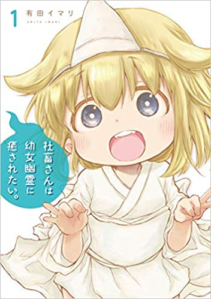

普段私が読んでいる漫画やアニメについて語るコーナー
一人でいることが好きな先輩を「ぼっち」扱いするウザい後輩が絡んでくるドタバタラブコメディ。非日常的な要素はなく、基本は主人公とヒロインを中心に大学での青春を描く。
先輩と宇崎ちゃんの掛け合いなどがとても面白い。

主人公はとあるブラック企業で働く社畜さん。
深夜遅くまでお仕事していると突然「たちされ...たちされ...」と会社の地縛霊の声が....その声のする方に社畜さんが行ってみると..??
幽霊ちゃん可愛いです＾＾